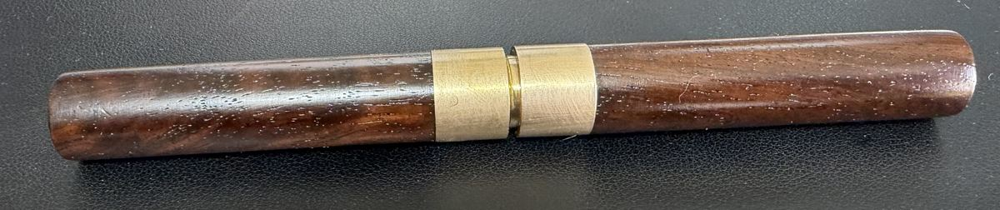

YouTube did this to me.
It started, as so many things do, with a late-night algorithm spiral. One video led to another, and somewhere between a Stanley No. 4 teardown and a long-forgotten channel about wooden planes, I was fully committed to a new hobby. I started hunting vintage Stanley Bailey hand planes — bought more than I should have, learned a lot, and in the process developed a real appreciation for quality craftsmanship. Particularly tools made with Brazilian Rosewood. That wood does something to me.
So there I was, scouring Facebook Marketplace, eBay, Shopgoodwill, local antique shops, and every garage sale within a reasonable drive — looking for something with good bones, a reasonable price, and a scope of work I could actually handle. That's when I found it: a vintage awl listed by a seller I'd never heard of, for $10.
Honestly? I had no idea exactly what I was looking at. The listing photo wasn't great. But the seller was fantastic — sent me several additional shots when I asked, including close-ups of the handle and the tip. Enough to make a decision. I threw down the $10 plus $6 shipping and rolled the dice.
"I had no idea exactly what I was looking at. The seller sent me several additional photos so I could get a better idea of what I was dealing with — and ultimately decided to throw down the $10 + $6 shipping. Rolling the dice."
Beautifully proportioned. Clearly worth saving.
When it arrived, the bones were immediately obvious — a beautifully proportioned cylindrical handle, likely rosewood (though mahogany is possible; the tight grain and rich reddish-brown tones lean strongly toward rosewood), with twin brass ferrules and a threaded brass cap that sheathes the blade. It had been used hard and put away grimy, but the design and craftsmanship were unmistakable underneath.
The metal parts were sound — no serious pitting, nothing structural to worry about. The wood was dry and thirsty, clearly neglected for a long time. The brass ferrules had dulled but weren't damaged. Nothing here that patience and the right materials couldn't fix.
What made the conversion possible — and safe — is that threaded brass cap. It screws on to fully sheath the cutting edge, which means the finished knife slips neatly into a pocket of my work apron: instantly accessible when I need it, fully protected when I don't. That detail alone makes this more practical than most purpose-built marking knives I've seen.
The blade geometry — slender, well-centered, with the right length and mass — kept pointing toward a marking knife from the moment I looked at it seriously. By the time the handle was clean and the grain was starting to show itself, the decision was made. The tool sat on my workbench for longer than I care to admit before I started, but once I realized I actually needed a quality marking knife and had one in raw form sitting right there — it moved up the list fast.
As found: good bones, thirsty wood.
The metal was in solid shape for its age — surface-level oxidation in spots but nothing that diamond stones couldn't address. The wood told a different story: dry, slightly raised grain, lacking any luster. You could see the quality underneath, but it needed to be brought back.

Two separate jobs. One tool.
The wood and the metal needed completely different approaches, so I mentally split the project in two and tackled them separately.
For the wood: the handle wasn't cracked or structurally compromised — it was just dry and had lost whatever finish it once had. No stripping needed. The plan was a full sand-through-the-grits, mineral spirits wipe-down, and then an oil finish to really bring the grain back to life. I'd been wanting to try Walrus Oil — a polymerized tung oil product — and this felt like the right candidate.
For the metal: I made a deliberate choice to keep the work targeted. The tip needed to be reshaped from a round awl point to an angled knife bevel. And the back — this is critical for a marking knife — needed to be dead flat so it registers cleanly against a square or straightedge. I ruled out aggressive rust removal or full polishing. The steel was sound; I just needed to address the geometry.
The two-part construction of the handle was a gift. It meant I could work the wood and metal sections independently without worrying about getting oil on the steel or swarf in the finish.
The wood: five grits, three coats, one paper bag.
Mineral spirits first. Before any sanding, I wiped the handle down with mineral spirits to cut through the accumulated grime — what appeared to be decades of use. This step reveals what you're actually working with and gives you an honest preview of what the grain will look like with a finish on it.
Sanding. Once clean and dry, I worked through the grits: 120 to open the surface and remove the worst of the dryness, then 220 to finish. I used 3M Cubitron sandpaper throughout — it cuts cleaner, leaves a more consistent surface, and lasts noticeably longer than generic abrasives. Another mineral spirits pass after sanding to clear the dust and really pop the grain. That's the moment I confirmed this was rosewood — the tight grain and reddish-brown tones that emerged were unmistakable.
Walrus Oil — three coats. Walrus Oil is a polymerized tung oil, and the process for applying it is specific. I applied a thin coat, let it sit and absorb into the wood for 10–15 minutes, then wiped it thoroughly with a lint-free cotton cloth to remove any excess. Left it to dry overnight with a gentle fan moving air across the tool — critical for an even cure. Repeated for a total of three coats.
"By the third coat, the handle had a warmth and depth I wasn't expecting for a $10 find."
Brown paper bag. This sounds absurd, but it works. After the final oil coat had fully cured, I buffed the handle with a piece of a regular grocery bag — a Safeway bag, specifically. The paper acts as a very fine abrasive, somewhere in the neighborhood of 2,000–3,000 grit. It knocks down any raised nibs or high spots left by the curing oil without scratching the surface.
Renaissance Wax — two coats. Applied thin, hazed for 10 minutes, buffed with a clean cotton rag. Museum-grade wax, finishing touch on both wood and metal.
The brass ferrules. I started with Brasso — effective, but the smell was unpleasant enough that I pivoted to Flitz. The brass is much improved. There's a bit of refinement left in it, but close is good enough for now.
The metal: working out the geometry from scratch.
I'll be honest: metalwork is still the part of this hobby where I feel least confident. Reshaping an awl point into a marking knife edge is a different kind of challenge than sharpening an existing blade — the geometry has to be worked out from scratch, not just maintained. I'm still very much learning.
I used diamond stones at 400, 1200, and 2000 grits: slow and methodical. The 400 does the material removal — establishing the basic bevel from the original round awl point toward a flat-on-one-side knife profile. The 1200 refines it. The 2000 polishes.
The critical step — the one that makes this work as a marking knife rather than just a repurposed pointy thing — was flattening the back. A marking knife registers its flat back against a square or straightedge to scribe a line at an exact right angle. If the back isn't flat, the knife wanders. I spent more time on the back than the bevel, working it on the 400 stone until I had a consistent scratch pattern across the full width, then refining through 1200 and 2000.
Mid-restoration.


If you squint, it's mint.

Worth every minute.
The Honest Take
This project turned out better than I had any right to expect from a $10 Facebook Marketplace gamble. The rosewood came alive under the Walrus Oil — three coats brought out a warmth and depth that makes the handle genuinely satisfying to hold. The brass ferrules clean up nicely. And the threaded cap that sheathes the blade turned out to be the feature that makes this tool genuinely better than most purpose-built marking knives I've seen.
As a marking knife, it works. The back is flat enough to register cleanly against my square, the bevel holds an edge well, and the whole thing slips neatly into a pocket of my work apron — instantly accessible, fully protected. A $10 find that earned a permanent spot in daily rotation. If you find something like this, buy it.
Everything that touched this tool.
Some links below are affiliate links — I earn a small commission if you buy through them, at no extra cost to you. I only list what I actually used.
- 3M Cubitron Sandpaper 120 and 220 grit. Noticeably better cut and longer life than generic abrasives. My go-to for wood prep.
- Mineral Spirits Generic hardware store. Wipe-down after sanding to clean the surface and preview the final color. Let dry several hours before oiling.
- Walrus Oil (Polymerized Tung Oil) Applied in three thin coats — 10–15 minutes absorption time, wiped with lint-free cloth, 24 hours drying between coats with a fan. The grain transformation on the third coat is remarkable.
- Lint-Free Cotton Cloths For wiping off excess oil after each coat. Don't skip this — leaving too much oil on the surface leads to a sticky, gummy finish.
- Brown Paper Bag (Safeway) Yes, really. Used after the final cured oil coat to knock down nibs and high spots. Roughly equivalent to 2,000–3,000 grit. Absurd but effective.
- Renaissance Wax Two coats on the wood, applied thin, hazed for 10 minutes, buffed with clean cotton rag. Museum-grade wax. Used on both wood and metal on most of my restorations.
- Flitz Metal Polish For the brass ferrules. Started with Brasso — effective but the smell drove me to Flitz. Better experience, comparable results.
- Diamond Stones (400, 1200 & 2000 grit) For shaping the tip bevel and flattening the back. 400 does the material removal, 1200 refines, 2000 polishes. Flattening the back is the most important and most time-consuming step.